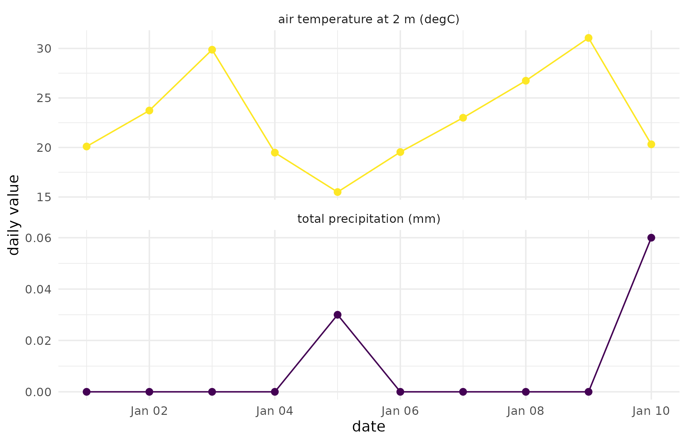

Why
A grower or agronomist assembling covariates for a trial site asks a plain question: for one exact paddock, can I pull daily temperature and rainfall, a vegetation index, and district farm economics from several public archives, through one interface, and get back a tidy table that carries its own source, licence and retrieval time, without leaking the paddock’s exact coordinates and without a live network connection standing between me and reproducing the analysis next season? This vignette answers with terroir’s own shipped fixtures, offline throughout, and closes on what happens when a source cannot answer at all.
What
terroir pulls climate, weather, vegetation-index, soil,
elevation and agricultural-economics data for a single geographic point
from many free sources, behind one uniform request-and-response
contract. It is the data-collector member of the ORCHESTRA: a producer
that feeds covariates and forcings to downstream modelling. Every source
is an optional adapter, so terroir installs and works with none of the
source packages present.
geo_point_request() builds a request: a point, an
optional date range, the variables wanted, and the id of one registered
source. list_sources() lists every registered adapter, and
register_source() adds one, enforcing the data-collector
role’s free-only rule – an adapter that does not reach a free source is
refused at registration time, not discovered later as a billing
surprise. collect_point() dispatches one request to its
adapter and returns a verified geo_point_series, or a
structured refusal when the source is unknown, its package is missing,
the point falls outside the source’s declared coverage, or a returned
value fails a plausibility check. collect_points() runs a
whole batch of requests at once and keeps every refusal as an accounted
row rather than dropping it from the stack. is_refusal()
and is_replayed() tell the two special outcomes apart from
an ordinary series; verify_geo_series() and
geo_point_schema() are the contract itself, exported so a
downstream package can check or type against them directly rather than
reaching into terroir’s internals.
Do
The registered sources
src <- list_sources()
nrow(src)
#> [1] 12| id | package | free |
|---|---|---|
| abares | read.abares | TRUE |
| chirps | chirps | TRUE |
| elevation | geodata | TRUE |
| isric | apsimx | TRUE |
| modis | MODISTools | TRUE |
| nasapower | nasapower | TRUE |
| nert | nert | TRUE |
| ocular | ocular | TRUE |
| silo | weatherOz | TRUE |
| soilgrids | geodata | TRUE |
| stac | rsi | TRUE |
| worldclim | geodata | TRUE |
Every adapter is free – the data-collector role forbids a paid
source, enforced by register_source() itself rather than
merely documented.
Registering a new source
The toy adapter below returns a constant value for illustration; a real adapter would call an upstream package instead, the way the built-in sources do.
toy_adapter <- function(request, retrieved_at) {
dt <- data.table::data.table(
date = request$start, variable = "toy_index", value = 1
)
new_geo_point_series(
dt, lon = request$lon, lat = request$lat, source = "toy_local",
source_version = "1.0", license = "CC0", retrieved_at = retrieved_at,
call = "toy_adapter()"
)
}
register_source(
"toy_local", toy_adapter, package = "base", free = TRUE,
description = "Illustrative in-memory adapter used only in this vignette"
)
"toy_local" %in% list_sources()$id
#> [1] TRUEThe free-only rule is enforced, not merely stated: registering the
same adapter under free = FALSE is refused outright, and
the refusal names the rule it enforces.
free_only_refusal <- tryCatch(
register_source("toy_paid", toy_adapter, package = "base", free = FALSE),
error = function(e) conditionMessage(e)
)
cat(free_only_refusal)
#> Refusing to register "toy_paid": the data-collector role is free-only.
#> ℹ Every adapter must reach a free source (`free = TRUE`).A request
req <- geo_point_request(
lon = 138.6, lat = -34.92, # Adelaide
start = "2020-01-01", end = "2020-01-31",
variables = c("T2M", "PRECTOTCORR"),
source = "nasapower"
)
req
#> <geo_point_request> source "nasapower"
#> point: (138.6, -34.92) range: 2020-01-01 .. 2020-01-31
#> variables: T2M, PRECTOTCORRCollecting (live)
collect_point() performs the download. It is not run
here (this vignette builds offline), but the call is simply:
series <- collect_point(req)
series # a geo_point_series: tidy data.table + provenance
attr(series, "provenance")Offline replay (zero network)
terroir ships a small set of recorded fixtures, one per
CORE source. Passing offline = TRUE answers a request from
the matching fixture with no network egress at all – useful for a
reproducible pipeline, for a continuous-integration run, and (with
coarsening, below) for a sovereign coordinate that must never reach an
upstream service. A replayed series carries replayed = TRUE
in its provenance and keeps the recording’s retrieved_at,
so a consumer can always tell a cached series from a live one.
offline_req <- geo_point_request(
lon = 138.6, lat = -34.92,
start = "2020-01-01", end = "2020-01-10",
variables = c("T2M", "PRECTOTCORR"),
source = "nasapower"
)
series <- collect_point(offline_req, offline = TRUE)
is_replayed(series)
#> [1] TRUE
attr(series, "provenance")$retrieved_at # the fixture's stamp, not now
#> [1] "2026-06-02 00:00:00"
head(series, 3)
#> <geo_point_series> 3 rows from "nasapower" (v4.2.5)
#> variables: "T2M" licence: NASA POWER (free, public)
#> lon lat date variable value unit source source_version
#> <num> <num> <Date> <char> <num> <char> <char> <char>
#> 1: 138.6 -34.92 2020-01-01 T2M 20.10 <NA> nasapower 4.2.5
#> 2: 138.6 -34.92 2020-01-02 T2M 23.73 <NA> nasapower 4.2.5
#> 3: 138.6 -34.92 2020-01-03 T2M 29.87 <NA> nasapower 4.2.5
#> retrieved_at license
#> <char> <char>
#> 1: 2026-06-02 00:00:00 NASA POWER (free, public)
#> 2: 2026-06-02 00:00:00 NASA POWER (free, public)
#> 3: 2026-06-02 00:00:00 NASA POWER (free, public)Offline mode needs none of the source packages installed: it reads
.rds fixtures and never touches an adapter. When no
recorded fixture answers a request, offline mode returns a structured
refusal rather than silently falling back to the network – the
zero-egress guarantee is absolute. A caller can point terroir at their
own directory of recorded fixtures with
options(terroir.fixture_dir = "/path/to/fixtures"), or
switch the whole session offline with
options(terroir.offline = TRUE).
A figure: what the replayed series looked like
A geo_point_series is long (one row per date x
variable), so plotting it as small multiples – one panel per variable,
sharing the date axis – is the natural way to look at what a collector
call actually returned.
panel_lab <- c(
T2M = "air temperature at 2 m (degC)",
PRECTOTCORR = "total precipitation (mm)"
)
plot_dt <- data.table::copy(series)
plot_dt[, panel := panel_lab[variable]]
ggplot2::ggplot(
plot_dt, ggplot2::aes(x = date, y = value, colour = variable)
) +
ggplot2::geom_line() +
ggplot2::geom_point(size = 2) +
ggplot2::facet_wrap(~panel, ncol = 1L, scales = "free_y") +
ggplot2::scale_colour_viridis_d(guide = "none") +
ggplot2::labs(x = "date", y = "daily value") +
ggplot2::theme_minimal()
Adelaide, 1-10 January 2020, replayed from the shipped NASA POWER fixture: daily mean air temperature at 2 m and daily total precipitation. No network call was made to produce this figure.
Sovereign coordinates (coarsening)
A grower’s exact paddock GPS is sensitive. When a point is flagged
sovereign = TRUE, terroir coarsens the
coordinate to roughly a one-kilometre cell before any upstream call, so
the exact location never leaves the host. Both the raw-requested and the
coarsened-sent coordinate are recorded in provenance – the host keeps
the full record, the upstream service sees only the coarsened point.
sovereign_req <- geo_point_request(
lon = 138.63124, lat = -34.92871, # an exact paddock GPS
start = "2020-01-01", end = "2020-01-31",
source = "nasapower",
sovereign = TRUE # coarsening on by default
)
sovereign_req # prints both the raw and the coarsened (sent) point
#> <geo_point_request> source "nasapower"
#> point: (138.63, -34.93) range: 2020-01-01 .. 2020-01-31
#> variables: (adapter default)
#> coarsened (sovereign): raw (138.63124, -34.92871) -> sent (138.63, -34.93)
#> policy "precision=0.01"Coarsening is also available for a non-sovereign point via the
coarsen argument: a single number rounds to that many
degrees of precision (for example coarsen = 0.01 for a
roughly 1 km cell), and coarsen = list(grid = 0.25) snaps
each coordinate to the nearest quarter-degree grid node. The returned
series’ provenance gains sovereign,
coarsen_policy, and the raw-vs-sent coordinates; the fixed
ten-column series schema is unchanged, so a consumer reading those
columns is unaffected.
The response contract
geo_point_schema()
#> [1] "lon" "lat" "date" "variable"
#> [5] "value" "unit" "source" "source_version"
#> [9] "retrieved_at" "license"Every series carries these ten columns plus a mandatory provenance
attribute (source, version, retrieval time, licence, the exact upstream
call); verify_geo_series() checks both and fails loudly if
either is missing, so a malformed series never flows downstream
silently.
verify_geo_series(series)The unit column is part of the contract but is not yet
populated by every adapter: nasapower and
abares emit NA_character_ there, and so does
nert for actual evapotranspiration, whose unit is ambiguous
upstream. The vegetation-index sources set "index", and
silo, worldclim, elevation,
soilgrids, chirps and the other
nert products set a physical unit.
verify_geo_series() does not yet warn on an
all-NA unit column.
Graceful refusal
If a source’s package is not installed, or its free key is unset, a caller gets a first-class refusal rather than an error.
refused <- suppressWarnings(
collect_point(geo_point_request(0, 0, source = "not_a_source"))
)
is_refusal(refused)
#> [1] TRUE
refused
#> <terroir_refusal> source "not_a_source"
#> unknown source 'not_a_source' (see list_sources())Batch collection
collect_points() runs several requests at once and
stacks the outcomes into one table, tagged with a
request_index and a status column. A refusal
contributes exactly one accounted row rather than disappearing from the
stack, so a multi-site collection with a dead source still reports every
request it was given.
batch_reqs <- list(
geo_point_request(
138.6, -34.92, "2020-01-01", "2020-01-10",
variables = c("T2M", "PRECTOTCORR"), source = "nasapower"
),
geo_point_request(140.7, -35.30, source = "abares"),
geo_point_request(0, 0, source = "not_a_source")
)
batch_out <- collect_points(batch_reqs, offline = TRUE)
batch_summary <- batch_out[, .(
source = source[1L], status = status[1L], n_rows = .N,
reason = reason[1L]
), by = request_index]| request_index | source | status | n_rows | reason |
|---|---|---|---|---|
| 1 | nasapower | ok | 20 | NA |
| 2 | abares | ok | 20 | NA |
| 3 | not_a_source | refused | 1 | offline: no recorded fixture answers this request (source ‘not_a_source’, point (0, 0), range NA..NA); offline mode never falls back to the network |
Sources at a glance
| id | upstream | domain |
|---|---|---|
| nasapower | nasapower | global climate + solar (no key) |
| silo | weatherOz | SILO 5 km grid, Australia (free email key) |
| abares | read.abares | Australian gridded farm economics |
| modis | MODISTools | MODIS NDVI/EVI |
| stac | rsi | Sentinel-2 NDVI via Planetary Computer |
| nert | nert (AAGI-AUS) | TERN soil, soil-moisture, AET, canopy height, phenology (Australia; free key) |
| ocular | ocular (AAGI-AUS) | Sentinel-2 / Landsat spectral-index series over a 500 m window (Planetary Computer; cloud-masked, no key) |
| isric | apsimx | SoilGrids soil profile by depth layer (global, no key) |
| worldclim | geodata | WorldClim 2.1 bioclimatic variables bio_1 to bio_19 (global, no key) |
| elevation | geodata | SRTM 90 m elevation and slope (non-commercial licence, no key) |
| soilgrids | geodata | SoilGrids 2.0 means at 0-60 cm in four depths (CC BY 4.0, no key) |
| chirps | chirps | CHIRPS 2.0 daily rainfall, 50 S to 50 N (public domain, no key) |
The ocular source takes its index name from
variables[1] (default "NDVI") and its sensor
from variables[2] ("auto",
"sentinel-2", "landsat-8" or
"landsat-5"; "auto" by default). Pixel cloud
masking is on and cannot be switched off: a date whose window is
entirely cloud is dropped from the series rather than returned as a
spurious near-zero index.
worldclim, elevation,
soilgrids and chirps answer many requests in
one upstream call when collect_points() is given a batch,
so a set of sites costs one raster read rather than one per site.
worldclim and elevation carry non-commercial
licences that appear in each series’ provenance. GSODR is enrolled in
the ORCHESTRA and lands as an adapter in a future release.
Read
12 sources are currently registered, all free by construction: the free-only rule tested above refuses a paid adapter with an explicit error rather than letting one slip into the registry silently.
Air temperature at Adelaide across the replayed ten days ranges from 15.50 to 31.06 degC – a day-to-day swing typical of Adelaide midsummer once a front moves through – while precipitation is essentially dry: 2 of the ten days record a trace (0.03 and 0.06 mm), and the rest are zero. A collector that returned a flat temperature line or a wet run of days here would be the signal to distrust the fixture before trusting anything built on top of it.
Coarsening moves the sovereign point from its exact (138.63124, -34.92871) to the sent (138.63, -34.93) under the precision=0.01 policy – roughly a one-kilometre cell at this latitude – so only the coarsened point, never the exact paddock GPS, reaches the upstream service.
The three-request batch stacks 41 rows: the two answerable requests
(nasapower, abares) each contribute one row
per collected value, and the one unregistered source contributes exactly
one refused row rather than being dropped, carrying its own reason in
the reason column rather than a bare NA.
Limits
The five CORE-source fixtures shipped with this vignette
(nasapower, silo, modis,
abares, stac) were recorded once, on 2 June
2026: they answer exactly the point, date range and variables recorded
in the fixture manifest, and read nothing live, so the temperature and
precipitation figures above describe that one recorded January rather
than current conditions. nert and ocular ship
no offline fixture in this package, so neither their live retrieval nor
ocular’s cloud masking is exercised here;
NEWS.md documents both in full. silo,
abares and nert refuse a point outside
Australia’s bounding box, and ocular refuses outside its
UTM-defined latitude band, because its window is built in UTM and is
undefined further poleward – neither restriction is exercised in this
vignette, whose one worked point sits well inside every source’s
coverage. Coordinate coarsening rounds to a fixed number of decimal
degrees or snaps to a grid; it is not a true geodesic buffer, so the
ground distance a coarsened point actually moves varies with latitude
rather than being a constant one kilometre everywhere. Several of the
external facts this package asserts remain unverified against their own
authority – among them the SILO variable codes, the ABARES layer-name
dictionary and the Sentinel-2 band mapping – and
terroir_external_facts() and
terroir_fact_status() enumerate exactly which fact families
still need that check before a caller should treat their column
semantics as independently confirmed rather than merely
upstream-documented.
What to read next
The function reference (?collect_point,
?geo_point_request, ?collect_points) documents
every argument in full, including ones this vignette does not exercise,
such as passing an explicit retrieved_at for a reproducible
live run. terroir_external_facts() and
terroir_fact_status() document exactly which
external-authority facts this package asserts and which of them have
been checked against their own catalogue, family by family.
NEWS.md describes the newest source, ocular,
and the cloud-masking behaviour this vignette’s offline fixtures do not
exercise, in full.
Reproduce
This vignette draws no random numbers: every value comes from the shipped offline fixtures or from the package’s own deterministic code.
sessionInfo()
#> R version 4.6.1 (2026-06-24)
#> Platform: x86_64-pc-linux-gnu
#> Running under: Ubuntu 24.04.5 LTS
#>
#> Matrix products: default
#> BLAS: /usr/lib/x86_64-linux-gnu/openblas-pthread/libblas.so.3
#> LAPACK: /usr/lib/x86_64-linux-gnu/openblas-pthread/libopenblasp-r0.3.26.so; LAPACK version 3.12.0
#>
#> locale:
#> [1] LC_CTYPE=C.UTF-8 LC_NUMERIC=C LC_TIME=C.UTF-8
#> [4] LC_COLLATE=C.UTF-8 LC_MONETARY=C.UTF-8 LC_MESSAGES=C.UTF-8
#> [7] LC_PAPER=C.UTF-8 LC_NAME=C LC_ADDRESS=C
#> [10] LC_TELEPHONE=C LC_MEASUREMENT=C.UTF-8 LC_IDENTIFICATION=C
#>
#> time zone: UTC
#> tzcode source: system (glibc)
#>
#> attached base packages:
#> [1] stats graphics grDevices utils datasets methods base
#>
#> other attached packages:
#> [1] terroir_0.4.0.9000
#>
#> loaded via a namespace (and not attached):
#> [1] gtable_0.3.6 jsonlite_2.0.0 dplyr_1.2.1
#> [4] compiler_4.6.1 tidyselect_1.2.1 jquerylib_0.1.4
#> [7] systemfonts_1.3.2 scales_1.4.0 textshaping_1.0.5
#> [10] yaml_2.3.12 fastmap_1.2.0 ggplot2_4.0.3
#> [13] R6_2.6.1 labeling_0.4.3 generics_0.1.4
#> [16] knitr_1.52 tibble_3.3.1 desc_1.4.3
#> [19] bslib_0.12.0 pillar_1.11.1 RColorBrewer_1.1-3
#> [22] rlang_1.3.0 cachem_1.1.0 xfun_0.62
#> [25] fs_2.1.0 sass_0.4.10 S7_0.2.2
#> [28] otel_0.2.0 viridisLite_0.4.3 cli_3.6.6
#> [31] pkgdown_2.2.1 withr_3.0.3 magrittr_2.0.5
#> [34] digest_0.6.39 grid_4.6.1 lifecycle_1.0.5
#> [37] vctrs_0.7.3 evaluate_1.0.5 glue_1.8.1
#> [40] data.table_1.18.6.1 farver_2.1.2 ragg_1.5.2
#> [43] rmarkdown_2.32 tools_4.6.1 pkgconfig_2.0.3
#> [46] htmltools_0.5.9